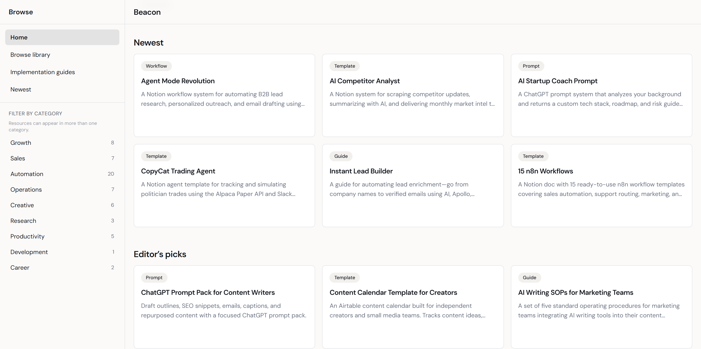
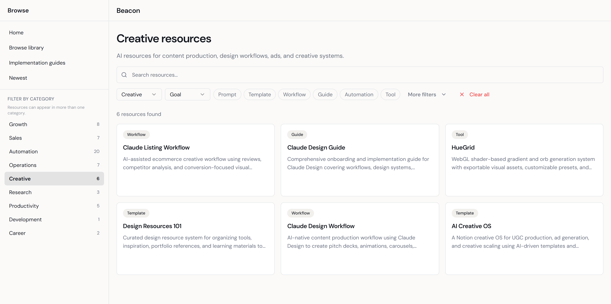
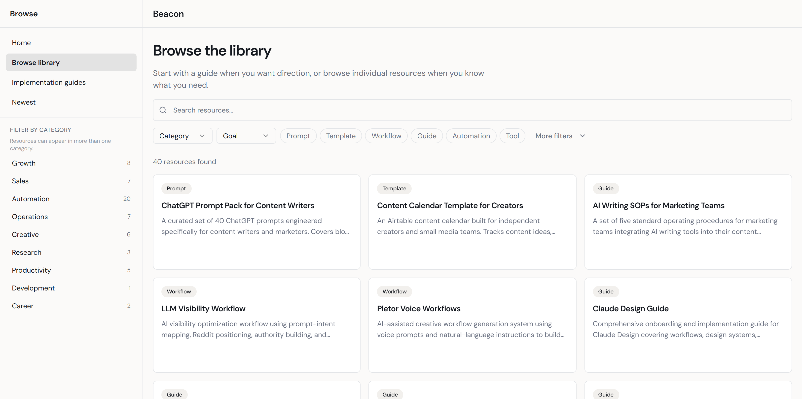
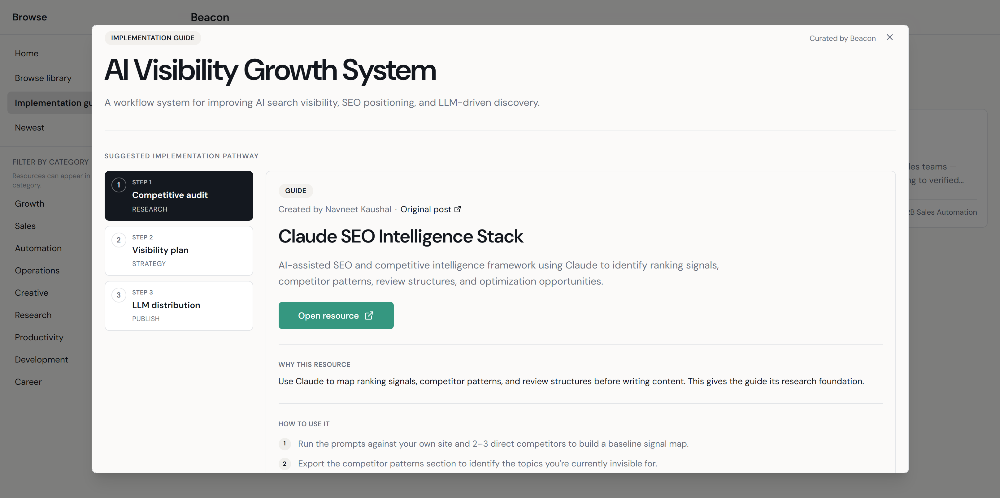
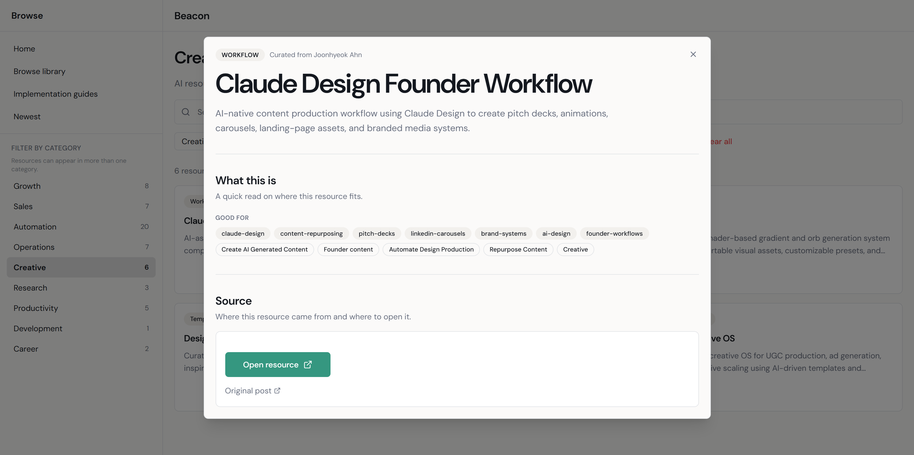
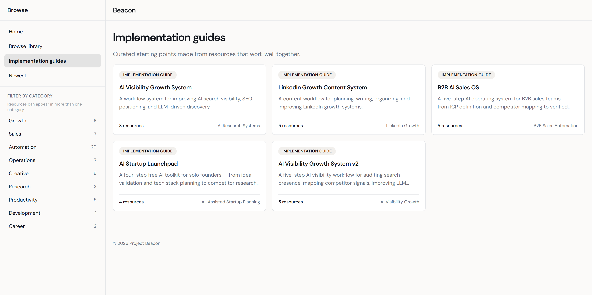

Beacon Systems
A UX and product design case study on helping users find, evaluate, and apply AI resources with more context.

The short version
AI resources were useful, but the path from discovery to use was fragmented.
LinkedIn had become a major place to find AI tools, prompts, and workflows, but the experience depended on platform behavior: following the right creators, recognizing comment-for-access posts, saving links across tools, and remembering why each resource mattered later.
Resources lived across posts, DMs, docs, and creator pages.
The value, source, and use case were not always obvious.
Individual resources rarely explained the next step.
The discovery experience needed to support how people actually look for resources.
An audit of the resource library revealed that users approached discovery in two ways: browsing broadly when exploring a new area, or filtering specifically when they knew what type of tool they needed. The category filter system was designed to support both modes.
The screenshot below shows the browse library with the Creative category active. The sidebar, filtered results, and resource counts are all visible in context.
What I audited
- Existing AI resource posts on LinkedIn: access patterns, comment-to-link mechanics, and post decay over time
- How users currently save and organize resources: bookmarks, Notion databases, spreadsheets, and screenshot folders
- Comparable resource library products: curation tools, link-in-bio aggregators, and niche AI directories
Key questions
- What prevents users from acting on resources they have already saved?
- What context would make a resource immediately useful at the point of discovery?
- How should a browse system balance broad exploration with targeted category filtering?
Constraints
- No formal usability testing cohort. Insights drawn from observed patterns, self-directed use, and structured QA review.
- Library is manually curated. Resource volume and coverage are limited by maintainer bandwidth.
- Link verification is ongoing. Not all resources are permanently confirmed as live or accurate.
- Creator attribution remains a partially solved problem in this MVP version.

The Creative category is highlighted in the sidebar, showing exactly where users are within the library taxonomy.
The center panel updates to show only resources matching the selected category, keeping results relevant and focused.
Each category in the sidebar shows its resource count so users can set expectations before filtering.
The full sidebar stays visible during filtering so users can pivot to adjacent categories without losing orientation.
The discovery problem was not just about finding resources. It was about knowing what to do with them once found. Users needed implementation context, not just links.
Project Beacon started with a simple observation: valuable AI resources were being shared across LinkedIn, but the discovery experience was fragmented. I designed Beacon as a curated resource library, then expanded it with implementation guides that help users understand what each resource supports and how it fits into practical workflows.
Resource Library
- Centralized scattered AI resources into one browsable destination
- Supported search, filtering, and category-based discovery
- Preserved the library context while users opened resource details
- Created the foundation for deciding which resources belonged in workflows

Implementation Guides
- Sequenced selected resources into guided workflow paths
- Explained what each resource does, what it supports, and how to use it
- Added context for users who needed direction, not just another saved link

Manual QA and iterative review replaced formal usability testing in this MVP phase.
Beacon’s current validation approach reflects its stage: a manually curated MVP without a formal testing cohort. Rather than running moderated usability sessions, I used structured QA passes to identify and resolve issues across the library.
Reviewed all library resources for broken or redirected URLs. Flagged and updated entries that no longer resolved correctly.
Verified that resource counts in the sidebar matched the actual filtered results for each category. Fixed mismatches found during review.
Confirmed description, use-case, and guide content for accuracy and consistency across resource entries in the library.
Ensured step structure and formatting are consistent across all guides. Each guide covers what it is, what it supports, and how to use it.
Validated the browse library and modal views across desktop and mobile breakpoints. Confirmed no layout breaks in key interactive states.
Formal usability research, creator attribution verification, and automated link-freshness monitoring are scoped for a future iteration. They are not claimed as complete in this version.


Beacon taught me that solving a discovery problem often reveals a deeper context problem. Honest constraints make better products than overclaimed features.
Discovery problems are often context problems
The core friction was not that users could not find AI resources. It was that they could not evaluate or act on them once found. Reframing from “where to find links” to “how to understand and use them” changed the entire product direction and led directly to the implementation guide system.
MVP scope requires honest constraints
Beacon’s first version works for a manually curated, QA-reviewed library. Scaling creator attribution, link freshness verification, and community contribution are open problems. Not solved ones. Designing within that constraint produced a more trustworthy and useful product than overclaiming would have.